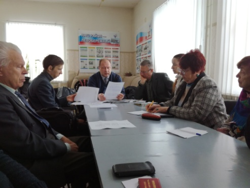
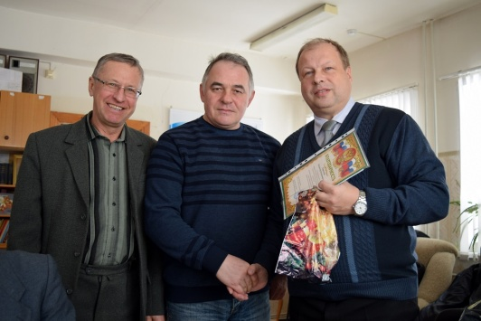
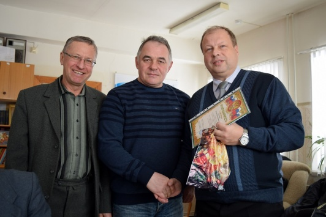

Собрание членов ВГОО «СП «Воинское содружество» в Музее-Диораме
04.02.2017
4 февраля 2017 года состоялось очередное собрание членов ВГОО «Союз писателей «Воинское содружество» в музее-диораме.
Участники собрания рассмотрели перспективы создания тематических альманахов, утвердили состав редколлегии журнала «Литературное созвездие», сформулировали основной принцип литературной деятельности – каждый автор несет ответственность за свое творчество. Были внесены идеи о проведении научно-литературной конференции в честь 100-летия Октябрьской социалистической революции.
Участники ВГОО «СП «Воинское содружество» поделились впечатлениями о проведенных мероприятиях, посвященных 74-годовщине освобождения Воронежа от немецко-фашистских захватчиков, в том числе уроке истории на базе Детско-юношеской библиотеки № 6 и уроке мужества, проведенном в Воронежском государственном промышленно-гуманитарном колледже.
Среди приглашенных гостей были: Данилова Т. Ю. – методист Центра развития творчества детей и юношества; Константин Зайцев и Евгения Кириченко – супружеская чета из Донецка и активно развивающийся поэтический тандем.
В ходе собрания были рассмотрены перспективы сотрудничества с городской Детско-юношеской библиотекой № 6 и план работы на текущий год.

 
